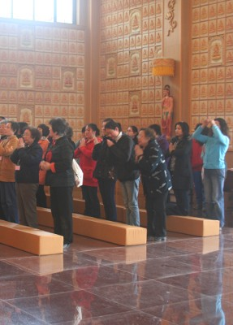

This page shows the order and English and Chinese text for a typical Buddhist liturgy (課誦) at a Chinese temple for either a morning chanting (早課), evening chanting (晚課) session, or regular Dharma service (共修法會) .
目录 Contents |

Morning chanting 早課
|
I take refuge in the Buddha as my teacher (three times).
The supreme, deep and wonderful Dharma,
Is difficult to find in a billion kalpas.
Let me accept and uphold everything that I see and hear today,
and hope to understand the Tathagata's true meaning.
離婆離婆帝。求訶求訶帝。陀羅尼帝。 尼訶啰帝。毗黎你帝。摩訶伽帝。真陵乾帝。莎婆訶。
lipalipate kuhakuhate taralite niharate wimalite swaha
Taking refuge in the Buddha, I wish all sentient beings understand the highest doctrine and make the greatest vow!
Taking refuge in the Dharma, I wish all sentient beings study deeply the sutras and acquire an ocean of wisdom!
Taking refuge in the Sangha, I wish all sentient beings lead the congregation in harmony and without obstructions!
May kindness, compassion, joy, and equanimity pervade all Dharma realms.
May all sentient beings benefit from our blessings and friendship.
May our mindful practice of meditation and precepts help us realize equality.
May we undertake the Great Vows with humility and gratitude.
供養清淨法身毘盧遮那佛，圓滿報身盧舍那佛，千百億化身釋迦牟尼佛，極樂世界阿彌陀佛，當來下生彌勒尊佛，十方三世一切諸佛，大智文殊師利菩薩，大行普賢菩薩，大悲觀世音菩薩，大願地藏王菩薩，諸尊菩薩摩訶薩，摩訶般若波羅蜜，
I make offerings to the tranquil Dharmakaya Vairocana Buddha; the perfect Sambhogakaya Locana Buddha; the trillion emanation body Sakyamuni Buddha; Amitabha Buddha of Western Pure Land; the future Buddha Maitreya; all the Buddhas of the Ten Directions; Manjusri, the bodhisattva of great wisdom; Samantabhadra, the bodhisattva of great practice, Avalokitesvara, the bodhisattva of great compassion; Ksitigarbha, the bodhisattva of the Great Vow; all bodhisattvas and great beings and great Prajnaparamita.
(breakfast) Congee has ten good qualities, it helps one moving, it is the result of karma without limits, and it gives rise to great joy.
薩多喃，三藐三菩陀，俱姪南，怛姪他，唵，摺隸主隸，準提薩婆訶。所謂布施者，必獲其利益，若為樂故施，後必得安樂。飯食已訖，當願眾生，所作皆辦，具足佛法。
Sà duō nán, sān miǎo sān pú tuó, jū zhí nán, dá zhí tā, ǎn, zhé lì zhǔ lì, Zhǔn Tí Sà pó hē. All those who give must do so for the benefit of others. Now that the meal is finished, I now hope that all sentient beings and that all will have sufficient Dharma.
The source of the Chinese text is source for Chinese text is the Fo Guang Shan Nan Tien Temple Liturgy (Chinese version). The source of the English translations for Refuge in the Triple Gem and Transfer of Merits is the Fo Guang Shan Hsi Lai Temple Liturgy (Chinese-English version). The Sanskrit for Sapta Jina Bhasitam Papa Vinas ana Dharani is from Imee Ooi, Ten Short Mantras Volume 4, which is short of some characters compared to the Chinese version above. There is no English for this mantra. The other translations are my own. Thanks to Venerable Jue Wei of Fo Guang Shan for her explanation.
English and Chinese text for the Buddhist Liturgy by Alex Amies 2013 is dedicated to the public domain.
© 2013 chinesenotes.com
{kind=link}